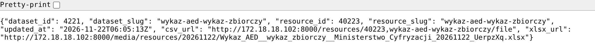

„Dane prosto z serca”
HackNation 2026 · Misja AED – dane na ratunek · zespół MKS
Wykaz AED w dane.gov.pl
Jedna lista defibrylatorów od wielu dostawców – w kodzie portalu, tak jak wykaz chronionych danych.
github.com/Serafin21/misja-aed
„Dane prosto z serca”
HackNation 2026 · Misja AED – dane na ratunek · zespół MKS
Jedna lista defibrylatorów od wielu dostawców – w kodzie portalu, tak jak wykaz chronionych danych.
github.com/Serafin21/misja-aed
Najważniejszy dowód · uruchomiony portal dane.gov.pl

Ta sama logika portalu, tabela zasobu z /aed-aggregated; 15 czytelnych kolumn – w każdym wierszu dostawca i link do źródła.
Urząd – plik w panelu („Zawiera wykaz AED”). Fundacja – harvester XML z containsAedList. Bliskie AED różnych dostawców: „Możliwy duplikat”.
Zmiana w portalu dane.gov.pl · uruchomiony portal
Panel dostawcy: nowe pole przy zasobie (wzorem „Contains protected data list” – DGA)

Plik z błędami nie przechodzi – lista błędów wiersz po wierszu

Zrzuty z portalu dane.gov.pl uruchomionego lokalnie z naszą zmianą (22.11.2026) · kod: portal/
Zmiana w portalu dane.gov.pl · uruchomiony portal

GET /aed-aggregated – odpowiedź API portalu

Ten sam mechanizm co wykaz chronionych danych (DGA): contains_aed_list, zadanie nocne, /aed-aggregated.
Mapa danych AED

„Znajdź AED” – gmina Krosno

Karta AED: dostawca, zbiór w dane.gov.pl, data danych
Otwarte teraz · szafka i instrukcja dostępu · dostawca i źródło danych · zgłoszenie wraca do dostawcy · WCAG 2.2 AA, od 320 px
Akcja dla dostawców danych
Każda komórka serca to jeden wiersz danych – jeden defibrylator. Bursztynowa to Twoje AED, którego jeszcze brakuje.
Najpierw tam, gdzie mapa pokazuje luki. Logo, księga znaku, #AEDwDanych.